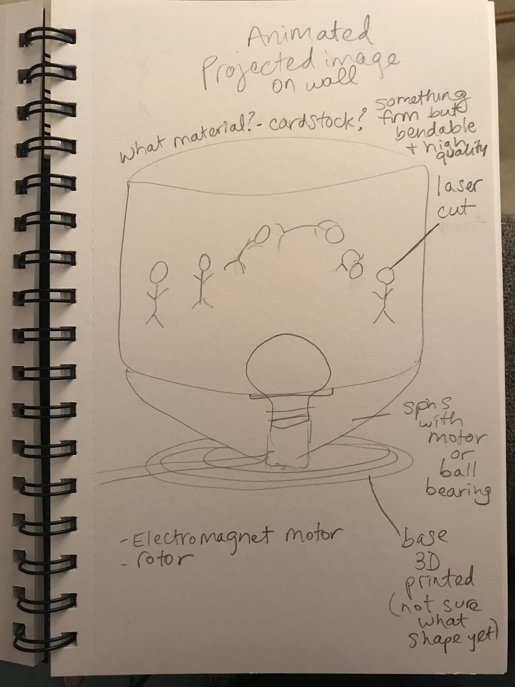

Assignment 7: Final Project Proposal
Light projected zoetrope
The concept
In the lamp project and the moving parts project I came across things I wanted to explore further. In particular, reflected light and spinning motion.

While working on the moving parts project I had thought about making a zoetrope (device that produces the illusion of motion by displaying a sequence of drawings or photographs showing progressive phases of that motion).
Zoetropes use a similar technology to a flip book, but they possess a circular shape and a strobe light to shine on each image as it rapidly passes by. Because you are looking through a cut out slit for each image, it turns into a frame rate which animates the images.
Additionally, the reflected light that was a by-product of my lantern actually became the most interesting part of my lamp. So as I was brainstorming I ended up with this idea to play with projected light and motion.
I started by putting my previous project parts together to see what effects I could produce.
Use case
This is an entertaining and explorative device that will be used in a mostly dark room to learn more about animation and the mathematical relaionship to light shined through an object.
My feeling is that this will be the beginning of a journey of learning not the end.
Sketches
I'm still working out the exact shapes and sizes these things will be. My work process involves some improv as I develop the concept.